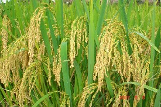

Chamber of Commerce Training session
Local Company Advertisement
Staatsolie Suriname
In 2014, Staatsolie, the Suriname state owned oil company,completed and fully commissioned a 10-year project to more than the double crude oil processing capacity at its Tout Lui Faut refining complex about 12 miles south of Suriname’s capital city of Paramaribo, greatly reducing the country’s dependence on imported fuel products. The expansion boosted the refining capacity of crude oil from 7,000 barrels a day to 15,000 barrels a day. The new refinery can now process high quality fuels from Saramacca crude, including premium diesel, gasoline, fuel oil and asphalt bitumen, for local sale as well as Sulfuric acid which is produced for export.HGC Engineering was retained by Environmental Services Limited on behalf of the National Institute for Environment and Development in Suriname to undertake an expert review of a Noise Specialist Study prepared by SRK Consulting Engineers and Scientists as part of an Environmental Impact Assessment of the then proposed refinery expansion. The SRK report predicted the sound levels of the expanded facility in the neighboring residential community for evaluation with respect to the limits of the International Finance Corporation (“IFC” of the World Bank Group)
Rice Harvest in New-Nickerie
 For the majority of the world's population, rice is the most important food. In Asia, it is even eaten almost daily by 95% of the population. But what happens before it's on your plate? How does rice grow, which techniques are used and what are the dangers during cultivation? Rice varieties and cultivation methods There are countless types of rice, estimates range from thousands to tens of thousands. Rice is therefore grown in many places worldwide: from Spain to California and from India to Argentina (here growsLassie’s Toverrijst!). In short, everywhere where there is a lot of sun and enough water. All those rice varieties and places have their own way of growing rice. The difference is often in the means and techniques used. Yet there are also many similarities. Each grain starts with a seed. To get the best and most rice, suitable rice seed is very important. This should eventually develop into a pellet that is easy to prepare and has the right shape, colour, taste and aroma.Three Day Forecast
-
_

-
_
-
_
.png)